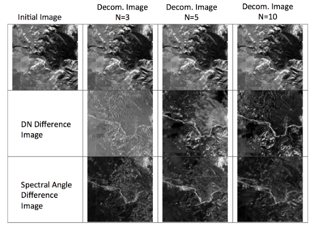

On-board Processing for Compression and Clouds Classification
OP3C compression technique achieves high
compression ratios, low data distortion,
still keeping a limited computation
complexity suitable to the on-board
constraints.
OP3C compressed data can be further
processed in their compressed form.
This
is a typical characteristic of the class of
techniques known as compressed sensing.
The OP3C compression methodology is
named HUNPCA (Hybrid Un-mixing Principal
Component Analysis)
and is based on a
spectral un-mixing procedure and PCA
combined with a coding algorithm.
The
international patent was granted to Planetek
Hellas (EP3347852)

Deployments
The performances of the OP3C compressor
have been demonstrated on two different
sensors: AVIRIS (airborne) and Hyperion
(spaceborne) on the standard dataset
(Aaron
et al. 2009) adopted by NASA and CCSDS
for hyper-spectral compressor benchmarking
HUNPCA applicable sensors:
- Hyperspectral sensors
- Imaging spectrometers
- Sounding (infrared) imaging sensors
- adapts to sensor's characteristics: the greater the spectral resolution, the higher the compression ratio.
- detects clouds and adapts compression. By applying the compression algorithm only to the land/sea pixels,
the algorithm achieves higher variance description with the same threshold.
This feature allows the algorithm to achieve higher compression ratios with better information modeling.
- Thermal hyperspectral imagers
Contact us:
Stelios Bollanos
Cofounder & Director at Planetek Hellas
mail: bollanos[at]planetek.gr
© 2022 Planetek Hellas